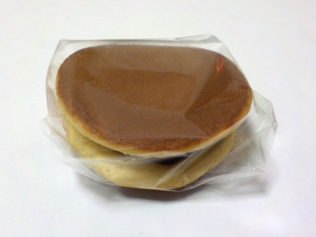

北陽製菓のふわふわしっとりどらやき。
2024/01/20

名前の通り外はふわふわ、中のアンコはしっとりしていました。よく出来たいい商品ですね。
どら焼きは値段が高めでボリュームがある商品がありますが、そうゆうのは特別な時だけでいいと思ってます。
普段食べるのはこの商品みたいにお手頃価格で、食べやすいサイズのものがいいと思いました。
島根県出雲市松寄下町1192-3
2024/01/20

名前の通り外はふわふわ、中のアンコはしっとりしていました。よく出来たいい商品ですね。
どら焼きは値段が高めでボリュームがある商品がありますが、そうゆうのは特別な時だけでいいと思ってます。
普段食べるのはこの商品みたいにお手頃価格で、食べやすいサイズのものがいいと思いました。